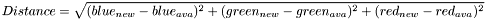

Smarties2 software
0.9
License
GPL2 LicenceDescription
This is the Source code's API and flow documentation for Smarties2Architecture
Goal of this application is a state machine controlled by status flags. The main() function controls the program flow by reading and setting status flags. These status flags are polled each millisecond in an timer interrupt routine. This timer interrupt routine reads and sets the IO ports and sets corresponding status flags.Following image clarifies the structure of the software:
Layers of the software stack
The task of the differen layers, high level, abstraction layer and low level can be described like in following image:
Executing the different layers
The state machine is devided into two sections, the mode and steps. Modes are represented as an enum system_mode_t and the steps as an struct system_step_t
The modes are changed depending on the user inputs or after powering on/reseting. The next picture clarifies the modes of the state machine.
State diagram of the smartie sorter
The mode SYS_MODE_RUNNING equals the automatic mode, where everything is controlled in several steps. The last step, step III, is a transition step to begin from the start again. See next picture for the overview of the steps.
Executing steps of the mode SYS_MODE_RUNNING
Each steps starts several tasks and waits until they are finished. Then the next step will be entered.
To see what is happening exactly in the different steps, please have a look at the sourcecode.
The modes, steps and all input/output related parts of the Smartie sorter are administrated within structs. The structs are organized like in the following picture.

Brief overview of several objects (elements) of the smartie sorter
For the detailed overview and description please refere to the code and documentation of smartie_sorter_t.
The system related IO actions are all defined in system.h There are controlled
- moving the revolver
- moving the catcher
- user input controlls
Minor configurations are made in smarties2.h
Progam flow
The application entry point is located at main() in smarties2.c file.- The main function first performs the initialization
- It handles the modes of the smartie sorter
- It handles the state machine
- It handles the programs executed by the menu during SYS_MODE_PAUSE
The LCD controlling is done with the lcd_display.h
The Menu structure is described in menu.h
Color detection
The color sensor TCS230 delivers 4 output values:- Blue (with blue filter)
- Green (with green filter)
- Red (with red filter)
- Brigthness (with no filter)
The smartie color detection is done by calculating the smallest distance to a next smartie.
For reference measures some values for each channel are recorded to gain a avarage value. They can be represented in an 3 Dimensional graph. For color detection the avarage value for each channel is used.
Smartie color RGB valus
Smartie color RGB valus from top
Smartie color RGB valus from front
Smartie color RGB valus from side
If a smartie color's red, green and blue cannel are measured the distance to each reference smartie is worked out by following formula:

The smartie sorter uses reference values which are gained during this software development. However the user can callibrate the reference values new without destroying the system default values.
The color tables with avarage values are stored in the EEprom memory. In the EEProm memory there are stored system default values as well as newly callibrated values. When the system default values are restored, all callibrated colors are overwritten.
Only the blue, green and red channel is respected. A survey brought up that the brightness of the surrounding has no influence to the color measurent. The most important factor is temperature, as the smarties fat drifts out when they are getting to warm (above 24 Deg C). Then, the smartie's colors become brighter.
Advanced color detecection
The first try with color detectin was made with reference tables. For each smartie was a minimum and maximum value for each channel stored. However, this method was too unrelyable.More methods for calculating the correct smartie color are prepared in the code. They can be enabled by compiler switches. Enabling all methods could possible fill all data memory, as a lot of reference data is necessary, which are preferable stored as floats.
Another try was to calculate the normalized distance from the new, unknown smartie to the reference values. However this method didn't show good results, probably because the Orange, Red, Pink and Brown smarties are nearly all on a vector in one direction (see figure above or the 3D gnuplot).
Another idea (not implemented) for color detecting was respecting the color drift of smarties with the temperature. To respect this, smarties must be mesured in a temperature range from 15 Deg C to 25 Deg C and measure the unfilterd color channel (Brightness). Then, estimate the polynomial function of the three channels blue, green, red with the brightness as coefficient. The result is a curve in a 3 Dimensional space for each smartie color, and the axes are the three color channels. The next step is to calculate the orthogonal distance from a new, unknown smartie to all the curves. The curve which has the smallest orthogonal distance should belong to the corresponding smartie.
With this method it could also be possible to estimate the temperature of the surrounding, not with +-1 Deg C, but you could say that the surrounding is cold, warm or too warm. Maybe too warm for smarties, which should be kept below 25 Deg C.
Programs
During SYS_MODE_PAUSE various programs can be started from the menu. For controlling the state machines programs, the enum program_t is used.Usually programs are executed completely in the background and only their progress or results are displayed during the state machine proceeds.
However, Programs can also take control over the user inputs and display. Some programs need to be completely finished before the state machine may proceed (e. g. prog_set_colors_blue)
The state of programs are controlled in main()